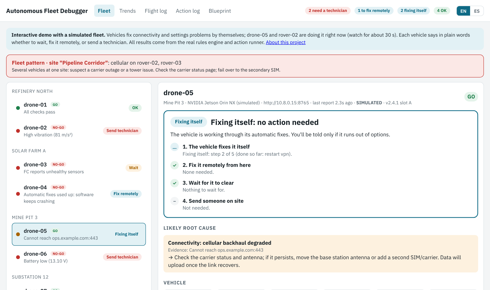
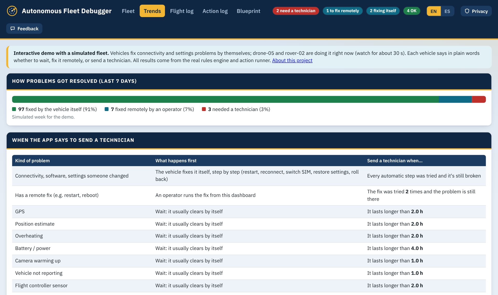

Remote vehicles break in boring ways, and every site visit is expensive
Drones in base stations, inspection rovers and other autonomous vehicles run hundreds of kilometres from the people who support them, over cellular links.
What actually goes wrong
- Connectivity: a dropped VPN, a hung modem, a SIM with no service, a wrong clock that breaks secure uploads
- People errors: a config edited by hand, a service stopped and forgotten, a mission uploaded without its geofence
- Software that crashes after an update
- Less often: real hardware faults such as a damaged propeller, a jammed lid or dirty charging contacts
Why it hurts
- Operators see raw alarms and have to guess what to do
- Technicians are sent for problems a restart would fix, and arrive without the right parts
- Nobody can say when remote options are truly used up
Designed for the operator, not the engineer
Every vehicle answers one question in plain words: what should I do now? The six possible answers map directly to an operating procedure.
- Every problem comes with numbered steps, what "fixed" looks like, and the rule for when to send someone
- Remote fixes are one button with a two-step confirm; the vehicle refuses anything unsafe, such as a reboot while it is moving
- When a technician is needed, the work order writes itself: what's broken, what was already tried, what to bring, how to confirm the fix
- A legend and standard operating procedure let a new operator be trained in one 90-minute session
A technician is the last step, not the first
Every problem climbs the same ladder, and most stop at step 1. Physical damage and safety issues skip straight to step 4.
- STEP 1
The vehicle fixes it itself
On board, even with no connection: reconnect, reset the modem, switch SIM, restore settings, restart, roll back.
- STEP 2
An operator fixes it remotely
One-click fixes, verified afterwards. Up to 2 tries.
- STEP 3
Wait for it to clear
GPS, heat, charging, a silent link: each has a time limit, from 1 to 4 hours.
- STEP 4
Send a technician
Only when the steps above are used up, with the work order ready.
The thresholds are explicit and configurable, and shown to operators in plain words, so the decision to dispatch is consistent from shift to shift.
Most incidents never reach a person

Each vehicle runs short repair ladders, one step at a time, waiting to see whether each step worked before trying the next. If a fix keeps working but the problem keeps coming back, it stops and asks a person instead of looping.
Figures from the simulated week in the demo, not a field deployment.
The week at a glance

Built to work when the network doesn't
See it run
The demo is a simulated fleet of drones and ground rovers. Two vehicles fix themselves live in the first 30 seconds, and you can run the remote fixes yourself.